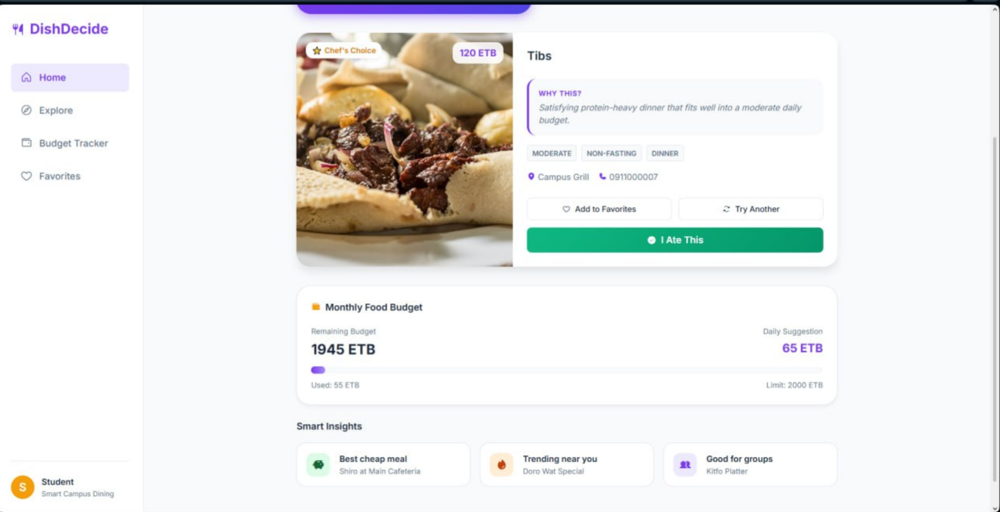
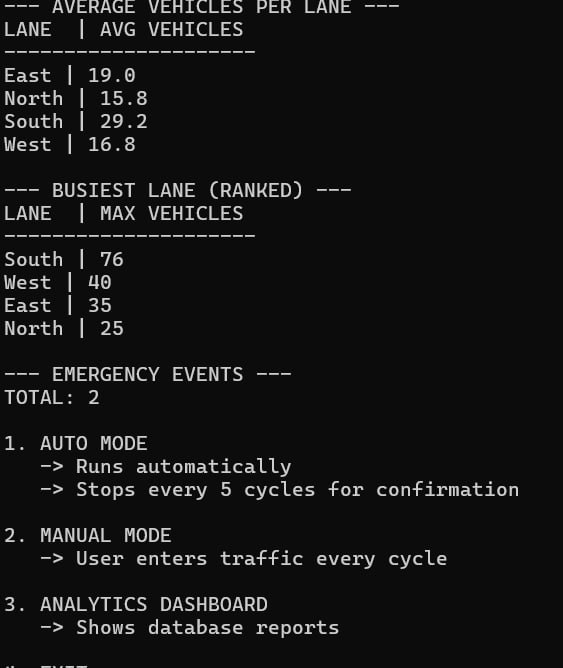

- Python
- C++
- Java
- Flutter
- Dart
- Mobile UI/UX Design
- HTML
- CSS
- JavaScript
- Responsive Web Design
- Frontend Development
- SQL
- MySQL
- SQLite
- Python Data Processing
- NumPy
- Pandas
- Semantic Search
- Machine Learning (learning)
- Teamwork
- Communication
- Problem-Solving
- Fast Learning
- Responsibility
My Learning Roadmap
- HTML structure and content
- CSS layout and design
- JavaScript and the DOM
- PHP and databases
- Deploy my portfolio online
Technologies and Tools Used
- Figma: Used to design the mobile app interface, screen layouts, prototypes, and user navigation flow.
- Flutter: Used to build the cross-platform mobile application.
- Dart: Used as the programming language for Flutter app development.
- Python: Used for developing and testing AI and machine learning components.
- OpenCV: Used for image and video processing, such as preparing camera frames for sign recognition.
- MediaPipe: Used to detect and track hand landmarks for sign recognition.
- TensorFlow: Used to train or run machine learning models for sign recognition.
- Firebase: Can be used for authentication, cloud data storage, and other backend services.
- Git: Used to track changes in the project's source code.
- GitHub: Used to host the repository and collaborate with team members.
- Visual Studio Code: Used to write and manage application code.
Projects
DishDecide – Ethiopian Meal Picker
A web application that helps users choose Ethiopian meals based on budget, food preferences, and dietary restrictions.
Technologies: HTML, CSS, JavaScript
Fikr Sign

A mobile application designed to support communication between deaf and hearing people through Ethiopian Sign Language. I contributed to UI/UX design, API integration, and deployment on AWS Cloud.
Adaptive Traffic Signal Management System

A C++ project designed to manage traffic signals based on traffic conditions and prioritize emergency vehicles.
Technologies: C++, SQLite
Education
BSc in Software Engineering
Addis Ababa Science and Technology University (AASTU)
third-Year Student
| Year | Semester | Course | Credit Hours | Grade |
|---|---|---|---|---|
| Year 1 | Semester I | Anthropology | 3 | A+ |
| Psychology | 3 | A+ | ||
| English | 3 | A- | ||
| Logic | 3 | A | ||
| General Mathematics | 3 | A | ||
| Entrepreneurship | 3 | A+ | ||
| Geography of Ethiopia and the Horn | 3 | A+ | ||
| Semester II | Physics | 3 | A- | |
| Applied Mathematics I | 4 | A- | ||
| Inclusive Education | 2 | B+ | ||
| Civics | 3 | A- | ||
| Introduction to Emerging Technology | 3 | A- | ||
| Year 2 | Semester I | Introduction to Software Engineering and Computing | 4 | A |
| Fundamentals of Programming I | 3 | B+ | ||
| Discrete Mathematics for Software Engineering | 3 | B+ | ||
| History of Ethiopia and the Horn | 3 | A | ||
| Probability and Statistics | 3 | A- | ||
| Global Trends | 2 | B+ | ||
| Semester II | Economics | 3 | A | |
| Fundamentals of Programming II | 3 | A | ||
| Digital Logic Design | 3 | A | ||
| Data Communication and Computer Networks | 4 | B+ | ||
| Database Systems | 4 | B+ | ||
| Total credit hours | 71 | |||
Contact
Address:
Addis Ababa,
Ethiopia
Email: bettynure1@gmail.com
GitHub: github.com/Betty-1219
LinkedIn: My LinkedIn Profile
Connect with me